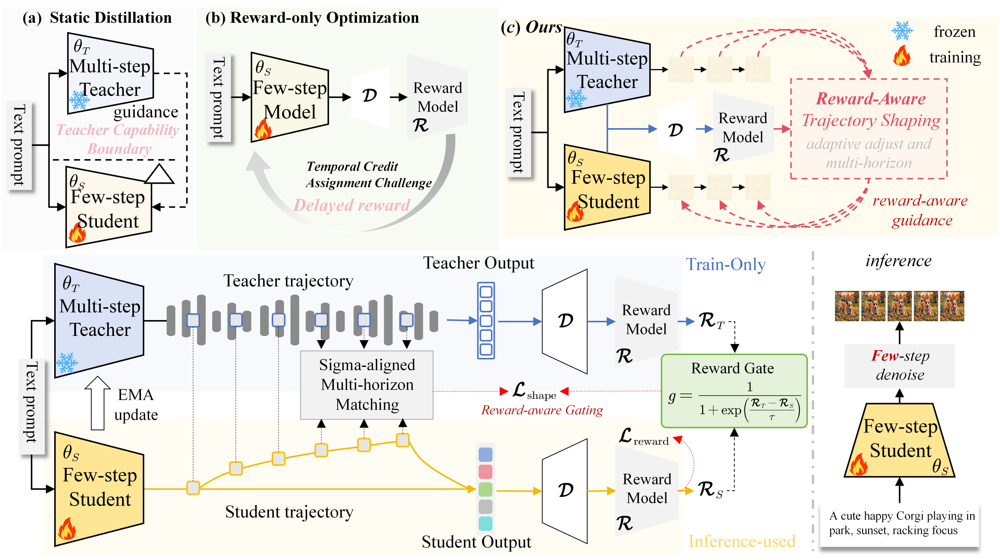

Bingyu Li (李炳煜)
Ph.D. Student
University of Science and Technology of China (USTC)
Supervised by Prof. Xuelong Li
Email: libingyu0205@mail.ustc.edu.cn
[Google Scholar] [Github] [Hugging Face]
Biography
I am a Ph.D. student at the University of Science and Technology of China (USTC), supervised by Prof. Xuelong Li. My research focuses on open semantic object state modeling. I study how visual observations and language expressions can be unified into structured and continuously updated object states for open and dynamic environments.
My current research is organized around three connected directions: State Initialization, which recognizes open semantic targets and initializes their structured states; State Maintenance, which preserves target identity and updates states through dynamic observations; and State Evolution, which predicts future states under actions and changing observation paths.
Building intelligence for an open and dynamic world.
News
- [06/2026] Our paper An Open-Source Benchmark and Baseline for Multi-temporal Referring Segmentation is now available on arXiv.
- [04/2026] Our paper Reward-Aware Trajectory Shaping for Few-step Visual Generation is now available on arXiv.
- [04/2026] Our paper Towards Realistic Open-Vocabulary Remote Sensing Segmentation: Benchmark and Baseline is now available on arXiv.
- [03/2026] Four papers are accepted by CVPR 2026, including two first-author papers.
- [11/2025] Our paper Exploring Efficient Open-Vocabulary Segmentation in Remote Sensing is accepted by AAAI 2026 as an Oral presentation (Top ~5%).
- [10/2025] Awarded the National Scholarship for Graduate Students.
- [04/2025] StitchFusion is accepted by ACM MM 2025 as an Oral presentation.
- [09/2024] Started my Ph.D. journey at USTC.
Selected Publications [Full List] (* Equal contribution)


Exploring Efficient Open-Vocabulary Segmentation in Remote SensingAAAI 2026 Oral · Top ~5%
AAAI Conference on Artificial Intelligence (AAAI), 2026.

MARIS: Marine Open-Vocabulary Instance Segmentation
IEEE Conference on Computer Vision and Pattern Recognition (CVPR), 2026.

Exploring the Underwater World Segmentation without Extra Training
IEEE Conference on Computer Vision and Pattern Recognition (CVPR), 2026.

Boosting Quantitative and Spatial Awareness for Zero-Shot Object Counting
IEEE Conference on Computer Vision and Pattern Recognition (CVPR), 2026.

StitchFusion: Weaving Any Visual Modalities to Enhance Multimodal Semantic SegmentationOral
ACM International Conference on Multimedia (ACM MM), 2025.

U3M: Unbiased Multiscale Modal Fusion Model for Multimodal Semantic Segmentation
Pattern Recognition, 2025.


Selected Honors
- National Scholarship for Graduate Students, 2025.
- AAAI 2026 Oral Presentation (Top ~5%).
- ACM MM 2025 Oral Presentation.
Professional Services
Journal Reviewer: IEEE TPAMI, IEEE TNNLS, IEEE TGRS, Pattern Recognition, and related journals.
Conference Reviewer: CVPR, NeurIPS, ICLR, and other major conferences.